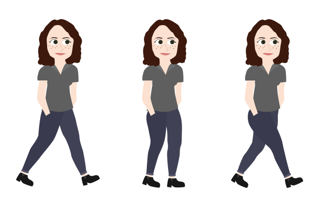
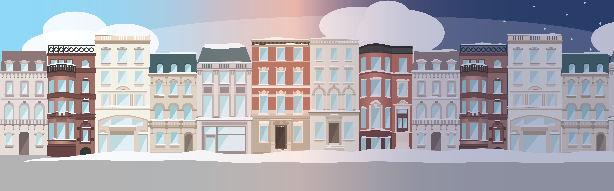
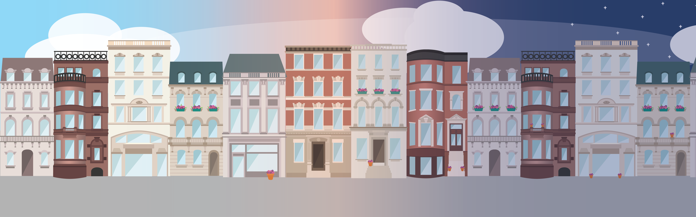

For some reason I had really been craving a reason to illustrate buildings in Boston, so when I was assigned this project I immediately started thinking about how to incorporate that type of illustration. The concept of the game was inspired by this one time I went on a run in the city and tripped flat onto my face trying to dodge something on the sidewalk. I decided to take that experience and turn it into a fun game of dodging the various things one finds on the sidewalks in Boston. This concept opened the door to some really awesome illustration opportunities that I was excited to make.

The main character of the game (I’ll admit it, I drew someone that looked like me) as well as the obstacles to dodge all began as hand drawn sketches that I transferred to Illustrator and vectorized. The background buildings were based on images of sidewalks around Boston.


The most fun part of the project for me was applying a changing sky and changing seasons to the background of the game, which lended itself to lots of illustrations of leaves, snow, and stars. Not to mention the fun colors and gradients!
PROGRAMMING
This was definitely my favorite project of the semester to code, as it was so interesting to find solutions to manage the large .svg files I’d created, change the seasons smoothly, adjust pacing just right, and make sure the obstacles responded to the changing seasons. Initially, the main character started out as a static image similar to the obstacles, but after iteration I decided it felt too unnatural and proceeded to have fun making her walk and do a split in the air.
Although this class has ended, I intend to pursue this project in the future by translating my Processing code into Java so that it can live on the internet and be a real game people can access and play!
Video Game
DATE
Fall 2016
KIND
Illustration, programming
CLASS
Programming Basics
This is the video game I designed and built in my first programming class using Processing. I absolutely fell in love with programming during this semester, it was so much fun to learn a new tool to use when approaching my design. For my video game, I combined my go-to Illustrator techniques with Processing to make my illustrations come to life in the format of this game, which pokes fun at how difficult it can be to walk down the crowded streets of Boston. The most satisfying part of this project was pending hours trying, and trying, and trying again to fix bugs in my code, and finally getting to that moment where I can press “Play” and see my illustrations come to life and actually do the thing!
DESIGNING
For some reason I had really been craving a reason to illustrate buildings in Boston, so when I was assigned this project I immediately started thinking about how to incorporate that type of illustration. The concept of the game was inspired by this one time I went on a run in the city and tripped flat onto my face trying to dodge something on the sidewalk. I decided to take that experience and turn it into a fun game of dodging the various things one finds on the sidewalks in Boston. This concept opened the door to some really awesome illustration opportunities that I was excited to make.
The main character of the game (I’ll admit it, I drew someone that looked like me) as well as the obstacles to dodge all began as hand drawn sketches that I transferred to Illustrator and vectorized. The background buildings were based on images of sidewalks around Boston.
The most fun part of the project for me was applying a changing sky and changing seasons to the background of the game, which lent itself to lots of illustrations of leaves, snow, and stars. Not to mention the fun colors and gradients!
PROGRAMMING
This was definitely my favorite project of the semester to code, as it was so interesting to find solutions to manage the large .svg files I’d created, change the seasons smoothly, adjust pacing just right, and make sure the obstacles responded to the changing seasons. Initially, the main character started out as a static image similar to the obstacles, but after iteration I decided it felt too unnatural and proceeded to have fun making her walk and do a split in the air.
Although this class has ended, I intend to pursue this project in the future by translating my Processing code into Java so that it can live on the internet and be a real game people can access and play!